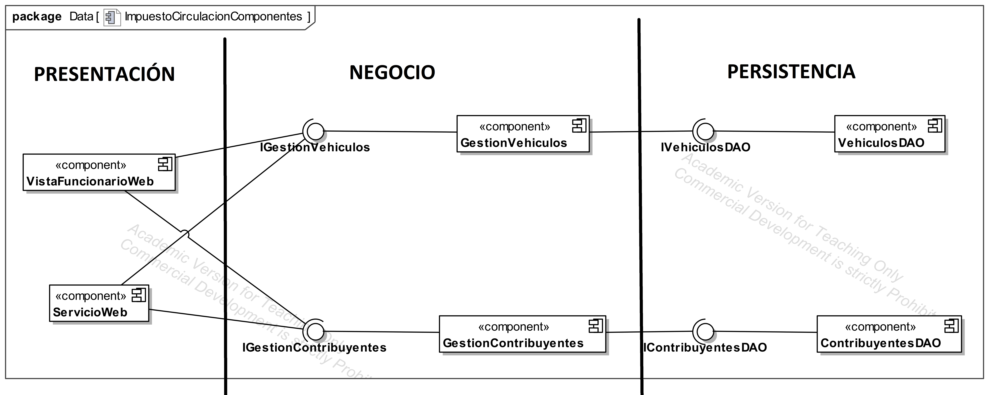

Es el diseño a más alto nivel de la estructura de un sistema. La aquitectura se diseña en la fase posterior a la fase de requisitos.
Es el tipo de arquitectura utilizada en la mayor parte de sistemas. Se suele utilizar en sistemas que implementan un modelo de negocio como por ejemplo una tienda online, una app para gestionar ciertos datos, etc. Sin embargo no es recomendable usarla para sistemas de tiempo real como los de los coches o los aviones.
Todo sistema que gestiona datos tendrá una BD y una interfaz con la que interactuarán los usuarios. Además, una parte del sistema se encargará de procesar datos y gestionar lo que hace con ellos. La arquitectura de 3 capas como su nombre indica divide el sistema en 3 capas bien diferenciadas, de forma que cada capa se comunique con la inferior. Las capas son las siguientes:
Ejemplo: Un usuario hace click en un botón para pedir prestado un libro, esta acción sería capturada por la capa de presentación. Dicha acción se enviaría a la capa de negocio dónde se analiza si el usuario puede pedir o no prestado un libro. Para hacer esa comprobación hay que consultar en base de datos (capa de persistencia) si el usuario tiene mas libros prestados o si tiene que pagar una multa antes.
Como cada capa se comunica con la inferior, conseguimos que si hay que hacer un cambio no nos volvamos locos modificando todo el sistema. Por ejemplo si tenemos que cambiar la forma en la que se almacenan los datos solo tendríamos que tocar la capa de persistencía.
En el siguiente ejemplo podemos ver el diseño arquitectónico de una aplicación sencilla organizada con el modelo de 3 capas:
Esta aplicación gestiona el impuesto de circulación de los vehículos registrados en un ayuntamiento. Podemos observar como está dividida en las 3 capas, cada una de las cuales cuenta con 2 componentes. Los componentes DAO son los de la capa de persistencia y se encargarían de almacenar en BD los vehículos y los contribuyentes.